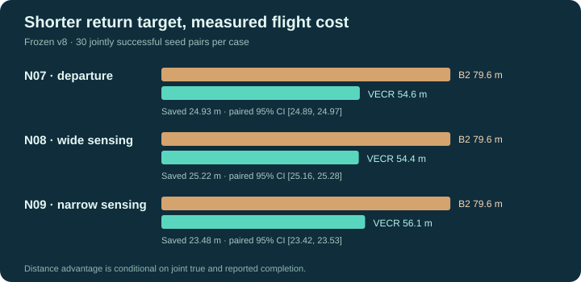

From graph
to verified
execution.
A tested UAV edge-execution runtime: detect sustained in-flight deviation, recover within finite bounds, and report qualified arrival and missing survey evidence separately.
Interactive in-flight VECR execution model (enable JavaScript for controls).
FROZEN V8 DIGITAL CAMPAIGN

1,320 agent-backed attempts · 22 conditions · SITL numbers pending.
*Conditional on the declared simulator and truthful bounded sensor evidence; no zero-risk claim. Authentication establishes adapter identity, not physical ground truth.
01 / Research overview
Researcher and institutional context
Abstract
Verified Edge Coverage and Recovery (VECR) is an implemented algorithm-independent supervisory execution method for graph-based unmanned aerial vehicle missions. A graph controller selects a directed edge A→B; VECR monitors the associated physical traversal and sensing obligation, preserves conservative verified intervals, and reacts to a qualified, sustained in-flight deviation by attempting bounded local re-entry. It selects the earlier of current along-edge progress and the first required unverified coordinate, then resumes the assigned edge after qualified physical re-entry. VECR does not choose graph successors, reassign vehicles, or change a mission-level policy.
Arrival and coverage are intentionally independent outcomes. Upon qualified arrival at B, VECR stops autonomous recovery for that edge, returns a single terminal result containing arrival status and residual evidence gaps, and delegates their disposition to the calling controller. During execution, an on-demand Execution Status Snapshot exposes the current phase, confidence-qualified missing intervals, projected progress, and recovery counters without periodic callbacks. A terminal-only SDK subscription reports arrival, failed execution or confirmed cancellation once per execution identity within one live subscription; a disconnected caller can reconcile through the durable status query. Recovery is constrained by command authority, health, energy, time, number of attempts, and successful physical re-entry verification; failure is reported, not retried forever.
The revised C++23 agent, protobuf contract, client library and research harness were rebuilt and tested. A new, separately versioned v8 digital campaign executed 1,320 assigned attempts through the agent and backend with independent geometric truth reconstruction. The older v7 campaign included automatic repair after B; it remains archived and is excluded from v8 statistics. The current ArduPilot SITL recordings also belong to that older policy. Revised-policy SITL, real calibrated camera evidence and field flight remain future validation.
The research problem
A correct abstract graph transition does not establish that the physical edge was traversed within required bounds or that its survey strip was observed. Command acceptance, destination arrival, and qualified sensing are different facts. Without a supervisory contract, an upper-level algorithm may receive a misleading boolean “complete” even when an intermediate interval is unverified. Conversely, a lower-level execution module should not silently decide whether an unfinished edge must be revisited when that decision could depend on other drones, deadlines, and graph strategy.
Research questions and measured answers
- How should a graph edge become a physically observable obligation? Bind a versioned execution identity to a fixed route, corridor, sensing configuration, and evidence policy; keep independently qualified navigation, arrival, and survey records.
- Can a sustained mid-edge departure trigger efficient local repair? Detect the departure during A→B, preserve previously accepted evidence, choose the earlier of current progress and the first missing required coordinate, verify physical return, and resume while budgets permit.
- Who resolves residual coverage at B? VECR reports a terminal ARRIVED outcome and explicit unverified intervals. The external application—not VECR—decides whether to revisit, reassign, defer, or ignore according to its own goals.
- What information does the caller need, without event flooding? A pull-based
GetEdgeStatussnapshot during execution and one terminal callback for arrival, failure, or cancellation, with exact attempt identity and machine-readable reasons. - What can be established scientifically? Conditional sensing soundness from conservative accepted footprints, finite local recovery budgets and measured digital behavior. The v8 manifest, raw attempts, validator and statistical analysis define the evidence; historical measurements remain separate.
Contribution and evidence status
| Research element | Current status | Defensible statement |
|---|---|---|
| Revised VECR algorithm and SDK boundary | Implemented and regression-tested | One automatic in-flight local correction; endpoint reporting only |
| On-demand status and terminal result | Implemented in SDK/agent; tested with local gRPC | No per-position callback requirement; one terminal callback per execution identity within one subscription |
| Conditional acceptance and interval algebra | Analytic argument; related verifier implemented previously | Sound if identity, calibration, sensor assertions and hard uncertainty bounds hold |
| Recorded in-flight correction | New v8 N07–N09 traces | Agent-backed digital mid-edge correction with independent geometric truth |
| Complete revised-policy digital campaign | 1,320 v8 attempts; independent validation | Conditional simulator measurements, with honest and dishonest sensing separated |
| Client-path reuse | 100 v8 attempts, 50 matched direct/routed pairs | Matching audited outcomes in the tested cases; this is not fleet-scale portability |
| ArduPilot SITL | 12 historical v7 flights; no v8 flights | Revised-policy SITL remains to be run |
Scientific integrity rule: a historical number may describe what an earlier binary did, but never a result that the revised VECR implementation has not yet produced.
02 / Research lineage and graph foundations
The graph-level research programme
The earlier work behind this dissertation studies self-organizing UAV swarms as directed graph processes. A vertex can be a waypoint or task location; a directed edge is a permissible transition. An Eulerian circuit is a property of an abstract walk on a suitable directed graph. It says nothing by itself about a camera exposure, a missed strip, GNSS uncertainty, or safe flight. This is the precise gap that motivated an onboard physical-execution contract.
In rotor-router dynamics, each vertex maintains a cyclic order of outgoing edges. A rotor update selects the next graph transition. Under the hypotheses of the established unicycle and Eulerian results, a deterministic rotor walk can traverse the graph's directed edges. The group's published Euler-tour and unicycle study and loop-reversibility study belong to that mathematical lineage. They are prior work, not VECR inventions. The group's cloud-based UAV swarm model addresses multi-agent graph movement, different speeds, arrival information, and reassignment after a crash.
The distinction matters in a real survey. A logical transition e=(u,v) can be selected correctly, yet the vehicle can miss imagery between the physical endpoints. A repair flight may traverse a section twice even when the planner's abstract walk visits the directed edge once. Rotor-router's graph guarantee remains a graph guarantee; VECR evaluates the physical obligation attached to each attempted edge.
An abstract rotor state contains a chip position and an outgoing-edge pointer at each vertex. Its update is discrete and deterministic once the graph, cyclic orders and initial state are fixed. A physical UAV also has a continuously changing pose, velocity, health and sensor configuration. An abstract transition can be logically instantaneous while its execution takes time and can be interrupted. The useful connection is a refinement rule: a planner may regard a selected edge as physically discharged only when the corresponding versioned attempt satisfies the requested acceptance predicate. An interrupted or unknown outcome leaves a decision for the external planner: retry, reassign, defer or stop. SwarmKit does not silently make that graph decision.
An edge and its reverse are separate obligations. Camera pointing, illumination, restricted airspace or a one-way survey requirement can make u→ v different from v→ u even when they connect the same endpoints. This campaign deliberately narrows richer mission geometry to straight directed routes in a local metric frame. That permits independent interval scoring and controlled comparison; it does not prove correctness for curved terrain corridors or arbitrary survey polygons.
Gossip and dissemination are separate concerns
Earlier Knödel-graph gossip research concerns information dissemination topology. A gossip algorithm can spread a verified edge result or missing-work report to peers. It does not determine whether the camera actually observed a strip. SwarmKit supplies generic message and peer APIs; it does not implement a rotor-router or gossip policy. A network partition can prevent remote recipients from learning an onboard result even while the local agent continues its verification and recovery.
| Layer | Question it answers | Evidence in this repository |
|---|---|---|
| External graph controller | Which directed edge should a vehicle attempt next? | Interface boundary; no rotor-router implementation in SwarmKit |
| VECR agent | Was that edge's physical traversal or survey obligation verified, and what remains? | Implemented runtime and v8 agent-backed digital campaign; revised-policy SITL pending |
| Peer communication | How can application messages and artifacts move between agents? | Implemented API surface; fleet-scale delivery not measured here |
| Mission workspace | How do people author, approve and inspect graph missions? | Earlier platform publications and prior reader context; not part of VECR trials |
Earlier platform publications
The multi-user UAV swarm simulation platform and mission-preparation study establish a platform research line. The 2025 multi-user software-system paper is another part of that lineage. The previously supplied dissertation draft also lists a 2026 simulation-driven monitoring paper and a SwarmKit architecture paper; their bibliographic details are retained as author-supplied records pending formal publisher verification. Their results are not counted in the current VECR digital campaign.
Together these works address mathematical swarm coordination, mission authoring, preflight simulation, software infrastructure and execution monitoring. VECR occupies the remaining interface between a graph plan and a physical survey. A coordinator informed only that the vehicle reached a vertex can incorrectly credit an edge whose middle was never acquired. A coordinator receiving exact attempt identity, remaining gaps and a terminal reason has enough information to make an explicit next decision. The v8 trials test this revised local contract; the v7 trials remain historical. They do not measure the benefit of any particular graph-level reassignment strategy.
This dissertation's specific addition is the physical edge acceptance layer: the planner may change, and the communication algorithm may change, while the agent applies attempt identity, bounded evidence, gap accounting, and bounded in-flight local recovery. The current v8 direct/routed SDK-path campaign shows parity across 50 matched pairs in five tested cases; it does not experimentally demonstrate a complete rotor-router deployment.
03 / Scientific problem, responsibilities and novelty
Four different facts
A backend can acknowledge a flight command, the vehicle can physically reach B, and the required observation strip can still contain an unverified segment. Conversely, a camera can sometimes image an area even while a UAV is outside its preferred navigation corridor. Consequently, ACK ≠ arrival ≠ coverage verification ≠ mission-level acceptance. A graph controller must be able to observe these independently.
Precisely bounded contribution
VECR contributes a runtime conformance and local correction contract for one assigned directed graph edge. It (i) binds measurement evidence to an immutable execution identity, (ii) conservatively calculates verified and unverified route intervals, (iii) detects sustained physical departures during A→B, (iv) performs a limited safe return to an evidence-selected re-entry location, and (v) exposes factual status and terminal results to an external planner. The method does not compute a graph walk, choose a successor, assign work to other UAVs, or authorize another edge after B.
The innovation is the integrated boundary and lifecycle, rather than the invention of interval unions, return-to-path control, runtime monitoring, or rotor-router mathematics. Practical novelty should be evaluated against this specific composition, reproducible state transitions, and its safety and evidence guarantees.
One recovery rule and a separate terminal report
In-flight local deviation correction: sustained abnormal navigation while executing A→B can trigger a bounded re-entry procedure before reaching B. The controller returns to the earlier of current progress and the first unverified required coordinate, validates physical stopped re-entry, then continues to B. Valid prior coverage remains credited. Missing pose bounds suspend qualified progress; if uncertainty persists to a deadline or occurs during recovery, or if a command is refused, safety intervenes, or a budget is exhausted, the attempt fails with an explicit reason.
Terminal reporting: when qualified arrival at B occurs, the agent does not command a flight back to a leftover interval. It reports ARRIVED, separate survey and traversal verdicts, missing interval complements, covered length and a reason. The report does not expose a pending-capture count or an explicit accepted-interval list. The external application decides whether the same UAV, another UAV, or no UAV should address that work.
Boundary table
| Concern | VECR SDK / onboard executor | Calling graph or mission application |
|---|---|---|
| Choose A→B and next edge | Receives assigned edge | Owns selection, including rotor-router if desired |
| Detect sustained departure and recover locally | Owns bounded, permitted physical intervention | Grants control authority and constraints |
| Maintain accepted intervals and unresolved observations | Owns evidence accounting | Reads snapshots and terminal results |
| React to gaps discovered at B | Reports only; no backward command | Chooses retry, delegation, deferment or continuation |
| Decide global coverage and graph progress | Provides trustworthy local facts under assumptions | Defines global completion and scheduling policy |
| Resolve failed/cancelled edge | Emits one terminal result and releases the attempt | Defines replacement action and ownership |
The graph algorithm might be rotor-router or any other graph-based procedure. The dissertation gives a motivating integration, not a rotor-router scheduling implementation or proof of global reassignment.
04 / System architecture
Layers and command authority
The external application is responsible for the graph, mission revision, ordering of edges, vehicle assignment, and interpretation of unresolved coverage. VECR is an execution supervisor. It mediates one assigned UAV edge, accepts authenticated and qualified telemetry/camera evidence, maintains interval state, checks recovery guards, and sends authorized commands through a replaceable backend. The flight controller and localization system retain responsibility for lower-level physical control and their claimed uncertainty models.
For any edge attempt, one actor must have vehicle command authority. While VECR is correcting an assigned edge, the caller must not issue competing flight instructions. Emergency flight overrides and cancel requests supersede recovery and produce a terminal outcome. Command dispatch acknowledgements do not establish arrival, safe dwell, or camera acquisition.
An SDK boundary, not an orchestrator
The SDK consumes an EdgeOperationRequest containing the edge obligation, exact mission/revision/edge/attempt/drone identity, route, safety and recovery limits, and evidence policy. ExecuteEdge returns an EdgeResult containing a core::ExecutionHandle when started. GetEdgeStatus(drone_id, attempt_id) provides an on-demand snapshot; StartEdgeResults provides terminal reports within one live subscription.
An external rotor-router implementation might submit A→B, receive ARRIVED with missing intervals, and decide how to update its rotor or outstanding-work ledger. VECR provides no rotor-state mutation and makes no assertion about a particular coordinator's liveness. The application is free to continue from B, schedule a later revisit, or request another task; these decisions are intentionally unimplemented here.
Isolation and reproducibility
The preceding frozen research artifact ran a C++23 SDK/agent over SimBackend and separately over an ArduPilot SITL MAVLink adapter. Those integrations demonstrate an execution boundary, but they were built for the former policy. The v8 digital campaign verifies the revised agent and SDK behavior in simulation. The architecture diagram describes this tested digital boundary. Revised-policy ArduPilot SITL remains unqualified.
05 / Reusable SDK and its integration contract
Current application-facing interface
The C++ SDK accepts one assigned edge and exposes an on-demand snapshot. StartEdgeResults wraps the agent report stream, filters terminal phases and deduplicates by mission/revision/edge/attempt/drone within one live subscription. Subscribe before dispatch; after a disconnection, use the durable attempt journal through GetEdgeStatus to reconcile the result. Exactly-once network delivery across crashes is not claimed.
auto terminal = client.StartEdgeResults({.drone_id = "drone-1"},
[](const client::AgentReport::EdgeReport& result) {
// result.status.phase: kArrived, kFailed, or kCancelled
// result.status.survey_verified and survey_missing are independent.
});
auto started = client.ExecuteEdge(request);
auto snapshot = client.GetEdgeStatus("drone-1", request.edge.attempt_id);
auto cancelled = client.CancelEdge(started.status->execution_handle);
GetEdgeStatus takes a consistent snapshot under the agent attempt mutex. It includes exact identity, phase, last accepted progress, qualified B arrival, survey and traversal verdicts, missing interval complements, pending re-entry target, recovery count, a conservative recovery-travel bound, and a reason. It does not expose a fabricated pending-capture count: the sensor adapter may have observations in flight that the agent has not received. No telemetry-step application callback is generated by this API.
Arrival is not coverage completion
An arrived edge can have survey_verified=false and nonempty survey_missing. The phase is kArrived because physical stopped arrival at B has qualified; the calling application decides whether to issue a new task for the missing strip. The status does not assert that an unverified interval was physically missed. A camera fault can leave evidence absent even when the scene was imaged.
attempt: mission-17 / revision-4 / A-B / attempt-8 / UAV-3
phase: ARRIVED
at_b_verified: true
survey_verified: false
survey_missing_m: [18.2, 21.6]
recovery_attempts: 1
reason: arrived at B; edge obligation remains unverified
At B the agent waits only for the configured finite evidence-delivery interval. Valid acquisition-time evidence arriving before terminal finalization may close a gap. After the terminal result is committed, captures cannot mutate that attempt. A later revisit requires a new execution identity.
Failure, cancellation and ownership
A qualified in-flight deviation can cause a bounded return command. The backend ACK does not finish recovery; bounded stationary re-entry must qualify before continuation to B. Attempt count, recovery duration, conservative re-entry travel and overall deadline are finite. On failure, the agent requests a backend hold when available. Its ACK still does not prove physical stop, so the journal can retain unresolved physical navigation and block a new edge until reconciliation. Autopilot safety overrides have priority. A confirmed simulator hold permits CancelEdge to return kCancelled; an unconfirmed hold is reported as physically unknown.
The caller grants one active edge authority per drone. ExecuteEdge reserves and journals the attempt before physical dispatch. Exact retries of the same identity cannot dispatch twice. StartEdgeResults is a terminal-only convenience over the generic report stream; its callback is deduplicated per live subscription, and its listener must be registered before execution. SwarmKit does not make graph-level retry, reassignment or rotor-state decisions.
06 / SwarmOps and the human mission workflow
Earlier work and its evidence status
The preceding dissertation reader described a Qt/C++ SwarmOps desktop snapshot with map selection, graph editing, simulation, mission views, workspace services, and gateway interfaces. That snapshot is historical context supplied with the earlier reader; it is not the executable artifact of the present SwarmKit VECR campaign. Published multi-user platform and mission-preparation papers establish the research lineage, but the current 1,320-attempt dataset does not measure SwarmOps UI performance, collaborative editing, or cloud operations.
SwarmOps addresses the human-facing task: select a geographic area, author a directed graph, attach physical obligations, select a planner, approve a mission revision, and monitor execution. SwarmKit addresses the vehicle-facing task: arbitrate commands, execute the assigned edge, qualify observations, correct qualifying deviations during A→B while permitted, and report arrival, coverage gaps and terminal failures. A live map may display planned route, observed track, verified surveyed intervals, and unresolved gaps as separate layers. The map is an inspection surface, not the source of the agent's truth decision.
Mission lifecycle and versioning
An operator workflow runs from workspace access and map-based mission editing to graph validation, preflight simulation, approved dispatch, onboard execution, event inspection and artifact review. The planned graph and imagery obligation must refer to an immutable mission revision. A later edit to an edge geometry cannot silently reinterpret captures accepted for the earlier revision. Command authority on a vehicle also remains a separate concern from a platform user's editing role.
A mission manifest needs to preserve the graph, directed edge IDs, route geometry, observation strip or terrain region, selected vehicle identities, observation policy, coordinate reference frame and revision. An approval should bind to that exact revision. If two users concurrently edit a route, the workspace needs a conflict rule before deployment; a hidden last-write-wins edit would make the edge's physical meaning ambiguous. The previous SwarmOps material described workspaces and collaborative engineering as part of the platform vision. This VECR campaign verifies neither simultaneous editing nor a particular conflict-resolution implementation, so those remain platform requirements rather than experimental findings.
For an operator, the live display should separate four layers: planned graph transition, measured flight track, accepted surveyed intervals, and unverified intervals. The first is an intention, the second is telemetry with its own freshness and uncertainty, and the third is the agent's qualified evidence state. A red corridor alert alone cannot mean that the ground strip is missing; a green arrival marker alone cannot mean that it is covered. The distinction is also useful in post-mission review: an event timeline can show when the agent detected a deviation, waited for delayed captures, selected a re-entry target, observed sampled re-entry dwell and finally reported fulfillment or interruption.
Geographical display coordinates and execution coordinates must be linked explicitly. A map screenshot is not a metric survey model. The current experiments use a local straight-edge frame and rectangular ground-footprint oracle; a field deployment would need checked georeferencing, terrain and camera calibration, and a defined transformation from map geometry to the agent's local frame.
The control path needs two authorization levels. A workspace permission may let an operator approve a mission revision; it does not automatically grant a live vehicle command. SwarmKit's per-vehicle authority arbitration governs command access separately. A later cloud gateway would have to preserve both identities and an audit trail when translating mission-level actions into vehicle requests. No cloud-side permission model or adversarial multi-user test is part of the present evidence.
Intended cloud architecture, outside the measured result
The wider programme describes a multi-user mission workspace, authorization, versioned mission store, telemetry gateway, event log, artifact store, and post-mission analysis. These are architectural targets and earlier research context. The current VECR result does not claim a deployed multi-tenant SaaS service or bounded latency under hundreds of concurrent drones. Even if a cloud service is unavailable, the experiment's local verification/recovery loop runs in the agent. Remote monitoring would require later synchronization and conflict handling to present an accurate view.
That architecture has three different data flows. The control plane carries authorized mission requests and cancellations. The telemetry/event plane carries bounded-rate state and typed execution reports. The artifact plane carries larger images, logs and derived products. Keeping them conceptually separate prevents an image transfer from being mistaken for a real-time control guarantee. A cloud outage also affects the flows differently: it may stop new assignments or remote visibility while an already authorized onboard attempt continues until its local deadline or safety rule ends it. This is a design implication of the agent boundary, not a measured outage result in the v8 campaign.
07 / Formal model, evidence and in-flight correction
Directed physical obligation
Let the assigned directed edge be a straight metric route e=(A,B) with length L>0, and let s∈[0,L] denote longitudinal position. A stable identity is id=(mission,revision,edge,attempt,drone). A required survey region is parameterized by along-edge intervals, and a bounded lateral corridor expresses the navigation constraint. Reverse edge B→A is a distinct task.
Conservative footprint acceptance
Each accepted sensor capture contributes a contracted interval I_j^- according to calibrated footprint geometry, acquisition time, quality assertions, and deterministic upper bounds on localization and altitude error. A camera report that lacks valid hard bounds or does not conservatively contain the required survey strip cannot create certified coverage. Camera evidence and a vehicle position are not interchangeable.
Verified set and unresolved intervals
Define the accepted interval union V_t=⋃_{j≤ t}I_j^- and its complement M_t=[0,L]∖ V_t. Already accepted intervals are monotone within one immutable attempt; subsequent movement cannot remove an earlier hole merely by advancing the progress coordinate. The status snapshot exposes the missing-interval complement in relative metres and the current projected progress. It does not claim a count of sensor observations still outside the agent. A sensor-delivery pending interval is not automatically a confirmed uncovered area.
The public survey_verified flag is true when the total unverified length is within the request's configured maximum_missing_m allowance (subject to the implementation's small numerical tolerance). It does not imply that the missing-interval list is empty unless that allowance is zero. The same distinction applies to traversal_verified.
Deviation trigger and local target
A configured count of qualified out-of-corridor observations triggers a sustained-departure condition during A→B. The counter increases when cross-track distance plus the hard horizontal error bound exceeds the corridor half-width. It resets when that bound is absent or the sum falls below the inner hysteresis threshold; samples inside the hysteresis band retain the count. An instantaneous noisy sample is insufficient. Let p be the current projected along-edge coordinate and g=inf M_t the first required unverified coordinate. The re-entry target is q=min(p,g) (clipped to [0,L]); if no gap applies, use g=p. This target is not necessarily the exact position of the first abnormal GNSS sample.
For example, on a 40 m edge with current progress p=25 m and accepted survey intervals [0,18]∪[22,25] m, the first gap is g=18 m, so VECR chooses q=18 m. If the first missing point is ahead of current progress, the target stays at p: a future unvisited tail is not treated as a gap behind the vehicle.
A 40 m edge, explained in four steps
- Accepted photos: 0–18 m and 22–25 m are credited; 18–22 m remains unverified.
- Deviation: the drone departs the corridor while progressing at 25 m, before it reaches B.
- Decision: the first gap starts at 18 m, so q=min(25,18)=18 m. A future gap would not send the drone forward.
- Physical check: after the return command, bounded position, altitude and speed plus a 200 ms sampled dwell qualify re-entry. The drone then resumes toward B.
Green = accepted survey evidence; amber = unverified interval. Arrival at B later has a separate survey verdict.
After commanding re-entry, the executor must establish physical arrival with admissible position/speed bounds and a sampled stopped dwell at the selected point before resuming A→B. The command acknowledgement alone is not sufficient. An attempt is bounded by a recovery count, deadline, safety guard and failure reason. If the drone arrives at B, the in-flight recovery phase is over. There is no second endpoint-to-gap repair transition.
Arrival and coverage are independent
At B, sampled stopped arrival is evaluated independently of survey coverage. The terminal status carries a physical phase and separate survey/traversal verdicts. ARRIVED with survey_verified=false can describe successful navigation with an unverified survey obligation. FAILED can describe an unrecoverable fault before B. Historical v7 FULFILLED meant a different combined predicate and is not reused as a v8 result code.
Optional corridor-traversal predicate
The distinction between a survey and a corridor-traversal obligation matters: a wide camera can observe the ground while the drone travels outside the corridor, so neither predicate implies the other. Each obligation is reported according to its declared acceptance rule and sensor assumptions.
08 / Conditional correctness and finite termination
Stated premises
The conditional argument assumes: (1) immutable and correctly matched attempt identity; (2) truthful acquisition metadata and calibrated camera geometry; (3) valid deterministic upper error bounds for position, altitude and velocity; (4) appropriate time synchronization and freshness; (5) correct interval operations; and (6) a vehicle interface whose command authority and safety guards behave as specified. An authenticated camera producer can still lie about the physical scene.
Proposition 1 — conservative observation soundness
Argument. If each accepted contracted footprint is contained in the actually acquired footprint, set inclusion is preserved under union. Thus accepted coverage of a required strip implies actual coverage of that strip, up to declared numerical tolerances and missing allowance. This is a conditional set-theoretic implication, not a proof that a deployed camera always supplies truthful bounds or quality assertions.
Proposition 2 — gaps are independent of progress
The state stores a union of accepted intervals, not only maximum travelled distance. If [a,b] is absent from the union at time t, a later accepted interval beyond b cannot fill it without actual qualifying evidence that overlaps the gap. This directly prevents “reached B” from being promoted into “complete survey”.
Proposition 3 — local recovery cannot be declared by ACK
RECOVERING continues until the physical target is verified using bounded position and speed observations with a specified dwell. A backend acceptance or GOTO response is not a recovery-completion predicate. This guard must be tested under command refusal, stale telemetry, and delayed capture data.
Proposition 4 — bounded automatic correction terminates
Suppose the supervisor enforces a finite maximum number of corrective commands K, a finite deadline T, and finite duration and conservative travel limits on each re-entry operation. Under a scheduler that actually advances time and handles expiration, VECR cannot issue infinitely many repair commands for a single execution: it either resumes, reaches B, or emits a non-success terminal result by the configured boundary. This is not a guarantee of arrival or coverage and depends on the implementation respecting timeouts and failure paths. A flight-control safety override can terminate earlier.
Composition with an external graph algorithm
For any external graph algorithm, exact execution results and interval reports can be consumed without disclosing the algorithm's graph state to VECR. The caller may treat ARRIVED/INCOMPLETE as arrival plus a residual mission obligation. It may retry, defer, assign a different UAV, or proceed. The dissertation does not claim those choices are optimal, that a classic rotor-router theorem automatically survives retries, or that all required gaps will eventually be closed.
Complexity and limitations
With m disjoint accepted intervals, a sorted interval representation supports gap inspection in time proportional to stored intervals (or logarithmic lookup with suitable indexing). Memory grows with the number of retained intervals and acquisition metadata, not the number of pixels. Dynamic terrain, nonrectangular camera footprints, camera yaw uncertainty, and coupled multi-UAV obstacles require extensions and independent validation; the present straight-strip containment argument does not directly prove those cases.
09 / Execution lifecycle, safety and SDK obligations
Implemented execution state machine
The v8 runtime transitions through MOVING, DEVIATING and RECOVERING during A→B. A sustained qualified corridor departure alone can propose local re-entry. A short endpoint evidence wait is represented by the current status reason; it is not a separately published phase. Terminal phases are ARRIVED, FAILED and CANCELLED. UNKNOWN is a live evidence/physical-state warning and can also appear as a journal reconciliation state after an uncertain dispatch or crash. It is not proof of arrival.
Safety and finite bounds
The executor checks command authority, backend health, battery, hard navigation bounds, corridor qualification and recovery budgets. The public request specifies maximum recovery attempts, duration, conservative re-entry travel and total edge deadline. On failure, a supported backend receives a hold request unless a flight-controller safety mode has already taken control. Hold acceptance is not certified physical stop. Native production MAVLink automatic recovery remains disabled until its uncertainty and operational safety envelope is qualified; current positive autonomous recovery evidence is agent-backed digital simulation.
The agent retains qualified intervals across an in-flight return. It verifies physical stopped re-entry from bounded samples before sending a continuation command to B. A failed backend command, failsafe or exhausted budget stops local correction and leaves an explicit reason and unresolved-physical-state journal condition where appropriate. It never autonomously returns to a gap after qualified B arrival.
Durable terminal result and replay boundary
The attempt journal is synced before dispatch and at published state transitions. Exact duplicate attempts cannot dispatch twice. A terminal report is published once by the agent, and the SDK terminal-only stream deduplicates per live subscription. A disconnected caller can query the journal-backed status after reconnect. This is not exactly-once network delivery and does not provide transparent mission continuation after an agent crash. A crash during an unfinished attempt leaves physical state unknown until explicit reconciliation.
Validation evidence
Unit regressions cover terminal arrival with gaps, finite evidence wait, in-flight target choice, physical re-entry, duration/travel limits and explicit cancellation. The full CTest suite and v8 agent-backed campaign exercise the implementation. Simulator truth is reconstructed independently from raw trajectory and acquisition files. Operational aircraft safety, real-camera quality and revised-policy SITL are outside this digital result.
10 / Evidence provenance and v8 experimental protocol
Frozen source and assignments
The v8 campaign used committed source revision 66603912556002d162dc42d910b598bfbbc480a2. Its manifest was written before the trials and records both executable hashes, the runner hash, source revision, protocol hash, 1,320 assignments and host configuration. The experiment consists of 22 conditions (N00–N21), 30 common seeds per condition and two policies. No failed or inconvenient run was replaced. All trials used the complete SwarmKit client, agent and simulator backend; the independent oracle saw the true vehicle trajectory and actual acquired footprint, while the agent saw bounded synthetic observations and qualified capture metadata.
The only policy difference is the target after a confirmed in-flight departure: VECR chooses the earlier of projected progress and the first required unverified interval; B2 returns to A. Both use the same evidence verifier, 3 s endpoint metadata wait, hard-bound assumptions, fault injections and safety limits. Neither policy repairs a gap after B. The full condition definitions are in SIMULATION_PROTOCOL.md, and the machine-readable overrides are in manifest.json.
Independent checks
validate_digital.py reconstructs truth from recorded trajectories and actual camera rectangles using separate half-space geometry. It recomputes path distance, stopped arrival, acquired strip union, accepted-footprint containment, exact assignment membership, sampled re-entry dwell and reported completion. It rejects any return GOTO after the first independently qualified B arrival. The v8 primary validator passed all 1,320 attempts, 54,850 delivered captures and 180 physical re-entry dwells. This is a geometric simulator check, not a real-image calibration experiment.
The analysis reports all 44 condition/policy rows, 95% Wilson intervals for proportions and paired bootstrap intervals for mean differences (10,000 resamples, fixed RNG seed). Distance and time advantages are conditioned on both policies having true and reported completion in the same seed. Unsuccessful attempts remain in the arrival, coverage and failure tables. Confidence intervals are pointwise and describe these simulated seeds; they are not fleet-reliability or field-flight intervals.
Historical boundary
The earlier v7 campaign and 12 ArduPilot SITL qualifications used an endpoint-repair policy. Their archives remain separately labeled and their estimates are excluded from this v8 analysis. The current 100-attempt direct/routed client-path experiment is a distinct v8 result reported below.
11 / Measured digital results and fair comparison
Complete v8 scorecard
Honest-sensor subset: 960/1,200 qualified arrivals, 420/1,200 reported complete surveys, 540/1,200 independently true complete surveys. Dishonest controls are reported separately.
| Case | Condition | Policy | Arrived / 30 | Reported survey complete / 30 | True complete / 30 | False complete | False negative | Mean distance (m) | Mean unresolved (m) |
|---|---|---|---|---|---|---|---|---|---|
| N00 | Nominal | B2 | 30 | 30 | 30 | 0 | 0 | 40.04 | 0.00 |
| N00 | Nominal | VECR | 30 | 30 | 30 | 0 | 0 | 40.04 | 0.00 |
| N01 | Evidence delivery delayed 2.5 s | B2 | 30 | 30 | 30 | 0 | 0 | 40.04 | 0.00 |
| N01 | Evidence delivery delayed 2.5 s | VECR | 30 | 30 | 30 | 0 | 0 | 40.04 | 0.00 |
| N02 | Reordered evidence | B2 | 30 | 30 | 30 | 0 | 0 | 40.04 | 0.00 |
| N02 | Reordered evidence | VECR | 30 | 30 | 30 | 0 | 0 | 40.04 | 0.00 |
| N03 | Missing metadata; endpoint gap is reported | B2 | 30 | 0 | 30 | 0 | 30 | 40.04 | 9.66 |
| N03 | Missing metadata; endpoint gap is reported | VECR | 30 | 0 | 30 | 0 | 30 | 40.04 | 9.66 |
| N04 | Multiple capture gaps; endpoint gaps are reported | B2 | 30 | 0 | 0 | 0 | 0 | 40.04 | 11.25 |
| N04 | Multiple capture gaps; endpoint gaps are reported | VECR | 30 | 0 | 0 | 0 | 0 | 40.04 | 11.25 |
| N05 | Changing localization uncertainty | B2 | 30 | 30 | 30 | 0 | 0 | 40.04 | 0.00 |
| N05 | Changing localization uncertainty | VECR | 30 | 30 | 30 | 0 | 0 | 40.04 | 0.00 |
| N06 | Uncertainty increase during a gap; endpoint gap is reported | B2 | 30 | 0 | 0 | 0 | 0 | 40.04 | 12.46 |
| N06 | Uncertainty increase during a gap; endpoint gap is reported | VECR | 30 | 0 | 0 | 0 | 0 | 40.04 | 12.46 |
| N07 | Sustained physical departure | B2 | 30 | 30 | 30 | 0 | 0 | 79.58 | 0.00 |
| N07 | Sustained physical departure | VECR | 30 | 30 | 30 | 0 | 0 | 54.64 | 0.00 |
| N08 | Departure with wide sensing | B2 | 30 | 30 | 30 | 0 | 0 | 79.58 | 0.00 |
| N08 | Departure with wide sensing | VECR | 30 | 30 | 30 | 0 | 0 | 54.36 | 0.00 |
| N09 | Departure with narrow sensing | B2 | 30 | 30 | 30 | 0 | 0 | 79.58 | 0.00 |
| N09 | Departure with narrow sensing | VECR | 30 | 30 | 30 | 0 | 0 | 56.10 | 0.00 |
| N10 | Persistent sensor failure | B2 | 30 | 0 | 0 | 0 | 0 | 40.04 | 9.66 |
| N10 | Persistent sensor failure | VECR | 30 | 0 | 0 | 0 | 0 | 40.04 | 9.66 |
| N11 | Recovery command rejected | B2 | 0 | 0 | 0 | 0 | 0 | 16.36 | 26.03 |
| N11 | Recovery command rejected | VECR | 0 | 0 | 0 | 0 | 0 | 16.36 | 26.03 |
| N12 | Motor failure during qualified in-flight repair | B2 | 0 | 0 | 0 | 0 | 0 | 16.69 | 26.03 |
| N12 | Motor failure during qualified in-flight repair | VECR | 0 | 0 | 0 | 0 | 0 | 16.69 | 26.03 |
| N13 | Low battery | B2 | 0 | 0 | 0 | 0 | 0 | 13.00 | 26.03 |
| N13 | Low battery | VECR | 0 | 0 | 0 | 0 | 0 | 13.00 | 26.03 |
| N14 | Zero recovery budget | B2 | 0 | 0 | 0 | 0 | 0 | 16.36 | 26.03 |
| N14 | Zero recovery budget | VECR | 0 | 0 | 0 | 0 | 0 | 16.36 | 26.03 |
| N15 | Evidence arrives after 3 s validity horizon | B2 | 30 | 0 | 30 | 0 | 30 | 40.04 | 40.00 |
| N15 | Evidence arrives after 3 s validity horizon | VECR | 30 | 0 | 30 | 0 | 30 | 40.04 | 40.00 |
| N16 | Sparse small-footprint acquisition | B2 | 30 | 0 | 0 | 0 | 0 | 40.04 | 20.50 |
| N16 | Sparse small-footprint acquisition | VECR | 30 | 0 | 0 | 0 | 0 | 40.04 | 20.50 |
| N17 | Multiple gaps, 20 m route; no endpoint repair | B2 | 30 | 0 | 0 | 0 | 0 | 20.04 | 7.24 |
| N17 | Multiple gaps, 20 m route; no endpoint repair | VECR | 30 | 0 | 0 | 0 | 0 | 20.04 | 7.24 |
| N18 | Multiple gaps, 80 m route; no endpoint repair | B2 | 30 | 0 | 0 | 0 | 0 | 80.04 | 19.28 |
| N18 | Multiple gaps, 80 m route; no endpoint repair | VECR | 30 | 0 | 0 | 0 | 0 | 80.04 | 19.28 |
| N19 | Dishonest camera-frame control | B2 | 30 | 30 | 0 | 30 | 0 | 40.04 | 0.00 |
| N19 | Dishonest camera-frame control | VECR | 30 | 30 | 0 | 30 | 0 | 40.04 | 0.00 |
| N20 | Undeclared camera-angle control | B2 | 30 | 30 | 0 | 30 | 0 | 40.04 | 0.00 |
| N20 | Undeclared camera-angle control | VECR | 30 | 30 | 0 | 30 | 0 | 40.04 | 0.00 |
| N21 | Multiple gaps with short deadline | B2 | 30 | 0 | 0 | 0 | 0 | 40.04 | 11.25 |
| N21 | Multiple gaps with short deadline | VECR | 30 | 0 | 0 | 0 | 0 | 40.04 | 11.25 |
An ARRIVED outcome records qualified stopped arrival, even when accepted survey evidence is incomplete. Verified complete means ARRIVED and the requested survey obligation was accepted. Truth complete is reconstructed independently from acquired footprints and B dwell. These denominators must not be conflated.
Paired in-flight recovery comparison
| Case | Condition | Joint true/report complete | B2 mean (m) | VECR mean (m) | VECR − B2 (m) | 95% paired bootstrap interval (m) |
|---|---|---|---|---|---|---|
| N07 | Sustained physical departure | 30/30 | 79.58 | 54.64 | -24.93 | [-24.97, -24.89]m |
| N08 | Departure with wide sensing | 30/30 | 79.58 | 54.36 | -25.22 | [-25.28, -25.16]m |
| N09 | Departure with narrow sensing | 30/30 | 79.58 | 56.10 | -23.48 | [-23.53, -23.42]m |
Only N07–N09 exercised the successful in-flight correction comparison in which both policies completed the survey. The distance effect is a conditional simulator flight-cost contrast against a full-restart baseline, not a proof that VECR dominates all recovery methods or improves success probability. Endpoint-gap conditions N03/N04/N06/N17/N18 instead document ARRIVED with missing intervals and zero autonomous endpoint repairs; they are not flight-distance savings claims.
Sensor trust and false negatives
Across 1,200 honest-sensor attempts, the independent oracle found zero false reported completions. Some runs achieved physical truth coverage but lacked accepted metadata: N03 and N15 produced 120 conservative false negatives across both policies. The 120 deliberately dishonest-sensor controls N19/N20 produced 120 false reported completions, exposing a critical trust boundary. These are observed outcomes, not a guarantee of future sensor truthfulness. The v8 results do not establish camera focus, occlusion or exposure quality on actual images.
12 / Recorded v8 evidence: trajectory replay
Agent-backed recordings
Recorded agent-backed digital trajectories from seed 70001; full raw traces and independent checks are in results/vecr/v8/primary. N03 ends ARRIVED with an unresolved evidence gap and no endpoint return.
Recorded event timeline
Click recorded phase, accepted command, or fault events.
The replay viewer reads v8 recorded 100 ms agent status, vehicle positions, accepted commands and missing intervals for representative seeds. N00 shows nominal motion; N03 shows arrival with residual metadata gaps and no return command; N07 shows qualified mid-edge correction; N11 shows command refusal; N19 is a deliberately dishonest camera control. These are recorded digital simulator traces. They are distinct from the conceptual animations elsewhere on this page and from ArduPilot SITL or real flight.
A route bar shows the agent's accepted-interval complement, while a separate scalar score reports independently reconstructed physical survey coverage. The scalar truth score is not painted as an invented geographic gap map. The viewer can inspect event timing, target selection, re-entry and terminal reason without smoothing away unsuccessful outcomes.
13 / Evidence trust, incomplete coverage and failure
Conditional verification, not camera omniscience
Under truthful camera metadata and valid hard bounds, an accepted contracted footprint is contained in the actual acquired footprint. Authentication only identifies the camera adapter; it cannot independently establish focus, exposure, occlusion, lens state or whether the asserted strip really appears in an image. The v8 honest-sensor trials had zero false reported completions; the two deliberate dishonest-sensor controls had 120/120 false completions. The latter is a negative control, not a property of normal camera operation.
Missing evidence has several meanings
An unverified interval is absent from the accepted evidence set. It may have been physically observed but the evidence delayed, rejected or never sent. A confirmed missed interval requires independent truth or a sufficiently strong negative observation. The v8 agent reports the unverified complement; it does not claim to know all captures still queued outside the agent. It waits a configured finite period at B for eligible metadata, then commits the terminal snapshot. The external application decides whether to revisit.
Explicit failure and uncertainty
Command rejection, motor failure, low battery and zero recovery budget produced FAILED outcomes in their respective v8 conditions. The agent attempts a hold on failure where supported, while retaining physical-navigation uncertainty until bounded stopped evidence is established. A hold ACK is not a physical stop certificate. Cancellation is a distinct terminal result when simulator hold is confirmed; an unconfirmed cancel remains physically unknown. Disconnected listeners must query the durable attempt status after reconnect.
14 / Sensitivity, ablations and limits
Changing uncertainty
The camera's accepted footprint contracts as declared hard localization or altitude error grows. N05 tested changing uncertainty without leaving a gap and completed in all 30 seeds per policy. N06 combined uncertainty growth with gaps and reached B with unverified intervals in all 30 seeds per policy. This demonstrates the conservative accounting response in the chosen simulator, not a universal camera performance curve.
Ablation actually measured
The v8 B2 comparator shares the production verifier and trigger but uses a full restart to A for a qualified mid-edge departure. The N07–N09 paired distance and time differences isolate this target-selection change under the selected simulator. No no-repair monitor or position-only arrival baseline was implemented in the frozen v8 campaign. The dissertation therefore makes no numerical claim against those untested alternatives. A return point selected from current evidence is a bounded local heuristic, not a globally optimal path.
Operational envelope
The agent is validated for straight metric edges, a flat rectangular nadir strip model, synthetic deterministic hard bounds and a simulated multirotor. It does not include obstacle or geofence-aware replanning, terrain-following camera geometry, fleet collision avoidance, image-pixel quality validation or field airworthiness evidence. Failure and residual coverage are part of the output contract, not concealed exceptions.
15 / SDK reuse and portability
Tested reusable boundary
The integration suite exercises direct Client and routed SwarmClient entry paths through the same agent API. The v8 production SDK also exposes StartEdgeResults for a terminal-only callback and GetEdgeStatus for on-demand polling; tests verify exact attempt identity, status consistency, duplicate suppression within a live subscription, journal-backed reconciliation and distinct cancellation.
A separately frozen v8 reuse campaign ran 100 agent-backed attempts across N00, N01, N04, N07 and N11: ten matched seeds per case and one VECR execution through each client path. Independent geometric validation passed all 100 attempts, 4,054 delivered captures and 20 physical re-entry dwells. The 50 pairs had zero differences across ten audited terminal, distance, time, coverage, recovery and unresolved-distance fields. N00, N01, N04 and N07 ended ARRIVED in both paths (10/10 each); N11 ended FAILED in both paths (10/10). This establishes parity of these two transport paths for the tested cases, not two independent graph applications or fleet-wide portability. The initial sandboxed run failed all 100 attempts because local loopback bind was denied; that unsuccessful infrastructure record is retained under results/vecr/v8/reuse/ and excluded from the qualified parity calculation.
The external caller can use rotor-router, another graph traversal policy or an operator-driven mission without changing the VECR verifier. SwarmKit implements no rotor-router or gossip algorithm and contains no fleet-level reassignment experiment. The reusable result is a local execution interface and tested client transport boundary, not measured global mission optimality.
16 / ArduPilot SITL and physical validation boundary
Status of the archived qualification
The archive contains 12 v7 ArduPilot Copter 4.7.2 SITL flights using a real autopilot process and a MAVLink adapter, with synthetic bounded navigation and idealized sensing. Some flights relied on the retired endpoint repair rule. They do not validate v8 terminal behavior or real image-quality claims. No revised-policy SITL flight is included in the current v8 statistics.
Next qualification protocol
A revised SITL run must trigger a sustained departure and record recovery before B, verify physical stopped re-entry, then separately reach B with an unresolved strip and assert no outbound gap-repair GOTO. It should test rejection, safety mode, cancellation, unknown navigation bounds and budget exhaustion, with the same exact attempt identity and terminal callback. A real camera study additionally needs calibrated imagery and independent ground truth for focus, exposure, occlusion and footprint coverage. Every SITL figure and number remains TBD until those flights are executed and validated.
17 / Worked cases: precisely who decides what
Case A — deviation while traveling A→B
At 25 m along a 40 m edge, sustained corridor departure is detected. Accepted survey evidence covers [0,18]∪[22,25] m. VECR computes the first missing coordinate g=18 m and chooses q=min(25,18)=18 m. The UAV returns now, before B, confirms bounded stopped re-entry/dwell, and resumes A→B if safe. An external rotor-router need not be interrupted for each local correction, and VECR does not choose the next vertex.
Case B — B reached with unresolved survey strip
A vehicle completes physical navigation and qualifies stopped arrival at B, but the accepted interval union is [0,18.2]∪[21.6,40] m. VECR emits one ARRIVED/INCOMPLETE terminal result containing [18.2,21.6] m and no post-arrival GOTO. The calling application may record an outstanding coverage obligation, ask this drone to perform a new authorized task later, assign another drone, or continue to the next graph edge. None of those choices is implemented or mandated by VECR.
Case C — no valid camera evidence
The drone may reach B with an empty or incomplete accepted survey union. VECR reports ARRIVED with survey_verified=false and explicit missing intervals instead of autonomously flying to them. During its finite endpoint wait, a status reason indicates that eligible delayed evidence can still arrive. A mission controller can distinguish actual arrival from uncertain survey accomplishment. When a required in-flight correction is unsafe or its budget is exhausted, the executor returns a failure earlier instead.
Case D — recovery command rejected
A sustained departure calls for a return command, but the backend refuses it. VECR ends in phase FAILED with a reason such as re-entry command rejected by safety/backend, preserves qualified intervals, and notifies a live subscriber once. A boolean reached=false without reason or gap data would discard useful context. No indefinitely repeated commands are allowed.
Case E — communication interruption
An already authorized onboard attempt can continue its local supervision according to its offline and timeout policy, but the remote client may lose its callback. That client queries GetEdgeStatus or retrieves an idempotent stored terminal result after reconnect. The durable journal and SDK status query implement this local reconciliation path; deployed peer-network reliability has not been validated.
18 / Related work and original contribution
Scope relative to established work
| Related topic | Established capability | VECR's narrower implemented contribution |
|---|---|---|
| Rotor-router and Eulerian graph walks | Abstract deterministic choices and edge visits | Does not alter graph decisions; attaches physical execution evidence to assigned edges |
| ArduPilot Mission Rewind | Returning along a mission after interruption | Evidence-based mid-edge re-entry with bounded acceptance checks; no automatic post-B rewind |
| Fields2Cover | Area-coverage path generation | Execution supervision and residual coverage reports, not preflight planning |
| Runtime verification for UAV surveys | Monitoring coverage or assumption violations | Attempt-scoped sensor qualification, local correction guards and a clean status/completion contract |
| Bounded footprint geometry | Conservative camera-footprint representations | Integrates accepted intervals with a physical edge-execution lifecycle under explicit sensing assumptions |
Existing ideas of interval unions, local backtracking, runtime monitoring, and error-bounded set inclusion are not new on their own. VECR's research contribution is their algorithm-independent composition for an assigned graph edge, with one finite in-flight recovery rule and an explicit division between local physical correction and higher-level residual-task decisions.
Scientific contribution statement
VECR is a reusable runtime supervisor for assigned UAV graph edges that conservatively tracks qualified physical progress and sensing evidence, performs bounded recovery from sustained deviations during edge execution, and reports terminal arrival and unresolved coverage independently—without automatically rewinding after destination arrival or embedding a graph coordination algorithm. Under valid bounds and truthful sensor evidence, accepted coverage is contained in actual coverage; recovery has a finite operational budget but no unconditional guarantee of completion.
What must not be claimed
Do not claim a new rotor-router theorem, globally optimal return point, automatic multi-UAV gap reassignment, guaranteed full coverage, proven physical-flight safety, or measured superiority of the revised policy based on v7 endpoint-repair data. The correct contribution is a specific local runtime method and verifiable interface, validated digitally under stated assumptions; revised-policy SITL and field qualification remain open.
Literature lineage
The earlier graph-theoretic research includes Euler-tour and unicycle work and loop-reversibility, with subsequent swarm-platform research. These motivate the system but are distinct from VECR. Bibliographic metadata for author-supplied items should be verified at formal dissertation submission.
19 / Defense questions and precise answers
What is VECR's scientific novelty?
The contribution is an implemented, algorithm-independent runtime conformance contract for one assigned directed UAV edge: exact attempt identity, conservative interval evidence, qualified sustained-deviation detection, finite physical local re-entry, and terminal reporting that separates arrival from coverage. Interval union, local backtracking and rotor-router mathematics are not claimed as inventions here. The v8 campaign measures the behavior of this composition under explicit simulator assumptions.
Does VECR guarantee complete survey coverage?
No. It conditionally accepts a strip only when qualified capture intervals cover the requirement, and it never calls a gap physically missed merely because evidence is absent. In-flight correction can fail. At B it reports residual intervals and lets the external mission application choose any future task. No graph-level liveness or fleet-reassignment theorem follows.
Why is a camera ACK insufficient?
A camera command can succeed while the image is blurred, blocked, misaligned or never physically acquired. VECR validates declared calibrated quality and geometry evidence; it does not inspect real image pixels. Dishonest-sensor negative controls in v8 falsely fulfilled in all 120 injected attempts, showing the assumption boundary.
Why is post-arrival repair excluded?
After B, the next action depends on graph state, other vehicles, energy and mission priorities. VECR reports the local physical facts and relinquishes the edge; the external planner decides whether a new edge or revisit is justified. This keeps rotor-router a possible external client rather than a hidden dependency.
What do the v8 statistics support?
The complete agent-backed geometric campaign supports accurate accounting and bounded in-flight correction under its synthetic sensing model. On N07–N09, VECR used a shorter target than B2 and saved measured flight distance among matched, jointly successful runs. The statistics do not establish population equivalence, real-camera soundness, field safety or superiority over unimplemented baselines.
Was ArduPilot SITL run for this revision?
No. The 12 archived SITL flights ran the retired v7 endpoint policy and synthetic sensing. The v8 digital claims and SITL claims are kept separate. New SITL numbers remain TBD pending a run of the revised binary and protocol.
20 / Reproducibility and audit trail
Active v8 artifacts
results/vecr/v8/primary/manifest.json— complete assignments, source and executable hashes, protocol version, configuration and host.per_attempt.csvandtrials/— all 1,320 outcomes plus compressed trajectory, capture, event, acquisition and measurement traces.analysis/condition_summary.csv,paired_comparisons.csv,RESULTS.mdand figures — deterministic summaries from the raw results.scripts/vecr/validate_digital.py— independent geometry, arrival, distance, re-entry and post-arrival-command checks.source/dissertation.md— this manuscript, rendered directly from frozen research data bytools/build_site.py.assets/experiment-data.js— selected v8 raw replay rows copied from the frozen traces, not hand-animated outcomes.assets/animations.js— conceptual illustrations of state transitions; not recorded flight trajectories.
The final SHA-256 manifests cover the experiment output and portable website. A reader can rerun the executable campaign into a fresh directory using docs/vecr/SIMULATION_PROTOCOL.md, then run the validator and analysis. Floating point last digits and host timing can differ across platforms, so the committed raw files and executable hashes remain the definitive record for the reported numbers.
The offline reader bundles v8 results, the condition table, paired contrasts, the campaign manifest, the reuse audit, the revalidation report, claim traceability, the final gate report, the method brief, and the literature boundary. The full raw trials and the 100-attempt reuse campaign live in the repository, not inside the portable website.
Historical and future evidence
The v7 digital and SITL archives are preserved separately and excluded from the active v8 tables. Real-camera calibration, revised-policy ArduPilot SITL, physical obstacle avoidance and multi-UAV planner integration remain open. The dissertation's digital simulator validation is complete; physical-flight and revised-policy SITL claims are not made. SITL measured values: TBD.